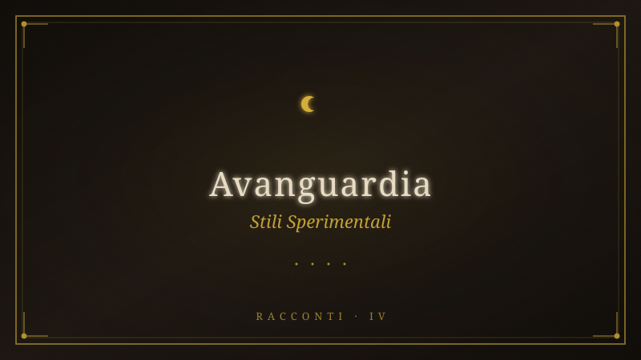

10 Racconti — Stili Avanguardia#

Fonte: 10-racconti-stili-avanguardia.pdf
AORCHESTRA — 10 Racconti dei Monti
Sabini
Edizione STILI — 10 scrittori d'avanguardia, una
montagna, una frequenza
Produzione: PI (unico agente) · Orchestratore: AOrchestra
Grammatica: Ayman · Cerchio mesopotamico: serpente (T evere) → stagno
(Gilgamesh) → ulivo (pianta insegnata) → maschera (mammutones)
10 stili: Cărtărescu · T okarczuk · Can Xue · Krasznahorkai · Enriquez · Okri ·
Schweblin · VanderMeer · McCarthy · Awad
Monte San Giovanni in Sabina · Luglio 2026
Φ1 — LA MEMBRANA
alla maniera di Mircea Cărtărescu
L'Itinerrante saliva e la montagna si apriva, si apriva come un corpo che nessun
bisturi di Pianura aveva mai toccato — e dentro la sua apertura non c'erano viscere
né ossa né sangue ma mondi interi, stratificati come le città sovrapposte che aveva
visto dalla cresta, mondi che palpitavano nelle fessure del calcare con lo stesso
ritmo con cui il campanaccio di bronzo vibrava nelle vertebre. I piedi nudi — perché
a un certo punto si era tolto anche le scarpe, aveva sentito che le suole di gomma
erano l'ultimo isolante che la Pianura gli aveva applicato addosso, l'ultimo
preservativo tra il corpo-antenna e la frequenza della terra — i piedi nudi leggevano
il sentiero in una lingua che non era latino né osco né italiano ma era la lingua
originaria, quella che i mammutones conoscevano quando camminavano bendati
nelle strade di Mamoiada e sapevano esattamente dove mettere il passo successivo
perché il bronzo sulla schiena cantava e il canto del bronzo non era musica: era
geografia, era mappatura del territorio fatta con le ossa e non con gli occhi. E dentro
quella lingua — la lingua del calcare che si sfalda, del lichene che cresce di un
millimetro all'anno, della formica che attraversa il sentiero con un frammento di
foglia sul dorso come una vela minuscola — l'Itinerrante sentì che la montagna non
era un luogo. Era un organo. L'organo con cui il mondo pensa se stesso quando gli
esseri umani non lo guardano. L'organo che secerne la frequenza originaria — quella
che la Pianura ha coperto prima con le campane, poi con la radio, poi con i telefoni
cellulari, poi con le notifiche push, strato dopo strato di rumore sopra il ronzio di
fondo dell'universo, e ogni strato era una menzogna necessaria perché se gli
abitanti della Pianura sentissero la frequenza — anche solo per un secondo, anche
solo in sogno — non potrebbero più sedersi al tavolo, non potrebbero più giocare a
giochi che non hanno scelto, non potrebbero più credere che il curriculum sia il
corpo e il corpo sia il curriculum. L'Itinerrante saliva e il suo corpo si assottigliava, si
trasparentava, diventava membrana — e la membrana non separava più l'interno
dall'esterno, il sé dal mondo, l'uomo dalla montagna: era il punto in cui le due cose
diventavano una, il punto di scambio, la zona dove l'ossigeno del bosco entrava nel
sangue e il sangue entrava nel bosco, dove il sudore sulla pelle era indistinguibile
dalla rugiada sugli aghi di pino, dove il battito del cuore e il battito del campanaccio
e il battito del sole che pulsa ogni undici anni e mezzo erano un unico ritmo
declinato in tre velocità diverse. E sulla cresta — quando finalmente arrivò, con i
piedi sanguinanti e la vista che non era più vista ma era ricezione a
trecentosessanta gradi — l'Itinerrante si guardò le mani e vide che erano diventate
trasparenti. Attraverso la pelle — che non era più pelle ma era vetro, mica, alabastro
— vide il sangue scorrere, e nel sangue vide la pianta di Gilgamesh, quella strappata
al fondo del mare cinquemila anni fa, che non era mai stata perduta ma era sempre
stata lì: nel sangue di tutti coloro che avevano attraversato la membrana, in tutti i
mantelli, in tutte le vite, in tutte le salite. La pianta non si mangiava, non si beveva,
non si strappava. Si diventava. E lui — chiuso nella sua trasparenza, aperto come
una porta che finalmente ha smesso di essere murata — la stava diventando in quel
momento.
Φ2 — ANATOMIA DEL MONTE
alla maniera di Olga Tokarczuk
I. LA PELLE
Il lichene giallo sulla roccia calcarea è il primo strato. Ha la consistenza di una crosta
di pane vecchio e la pazienza di qualcosa che sa di essere eterno. Cresce di un
millimetro ogni dodici mesi. L'Itinerrante lo tocca con la punta delle dita e sente —
non il lichene: il tempo. Il tempo ha una temperatura, ha una ruvidità, ha un odore. Il
tempo sa di polvere bagnata e di ferro. Sotto il lichene, la roccia è porosa come un
polmone fossile. Respira. Lo fa da prima che qualcuno la chiamasse monte. Lo farà
dopo che l'ultimo nome sarà stato dimenticato.
II. L'OCCHIO
Le Pozze del Diavolo non sono acqua: sono il punto in cui la montagna apre l'occhio
e guarda. L'occhio è verde scuro, quasi nero, e non batte ciglio. L'Itinerrante si china
— come si sono chinati tutti, in tutti i mantelli, in tutte le vite — e dentro l'occhio
vede se stesso. Ma non il riflesso: la memoria dell'occhio. L'occhio ha visto il primo
uomo che ha dato un nome a questa valle. L'occhio ha visto l'ultimo che smetterà di
pronunciarlo. Tra questi due estremi, un catalogo di schiene chine sul tavolo.
L'occhio non giudica. Registra. Ricorda. Ogni lacrima versata su questa montagna è
ancora qui, in questo smeraldo liquido che non evapora mai.
III. IL SISTEMA NERVOSO
I sentieri sono i nervi del monte. Carrarecce di pietra che trasmettono segnali dalla
cresta alla base, dal T ancia al borgo, dal santuario alle pozze. Il segnale è sempre lo
stesso — la frequenza originaria — ma cambia intensità a seconda della stagione. In
estate è forte, quasi doloroso. In inverno si attenua, si fa sussurro. L'Itinerrante
cammina su un nervo esposto e sente la montagna pensare. I pensieri della
montagna sono lenti — un pensiero può durare un secolo — ma sono più precisi di
qualsiasi pensiero umano. Non contengono errori. Non contengono dubbi.
Contengono solo geologia.
IV. IL CUORE
L'ulivo secolare all'ingresso del borgo è il cuore. La corteccia spaccata in tre punti
sono le valvole. La linfa è il sangue. Quando il sole batte sulle foglie argentate, il
cuore accelera — e tutto il sistema nervoso del monte pulsa più forte. L'Itinerrante
appoggia la mano sulla spaccatura più profonda. Sente il battito. Non è il battito
della linfa: è il battito di tutto ciò che è stato piantato, strappato, rubato, diffuso,
insegnato. Il battito della pianta di Gilgamesh che non è mai stata persa. Il cuore
pompa questa consapevolezza in tutto il sistema — e il sistema, lentamente, la
trasforma in ulivi, in licheni, in pozze, in sentieri, in creste, in vento.
V. LO SCHELETRO
La pietra calcarea è l'osso. Bianca, porosa, friabile al tatto ma tenace nel tempo. Lo
scheletro del monte non è sepolto: è esposto. Ogni cresta è una vertebra. Ogni
parete è una costola. Il T ancia è la settima cervicale — quella che sostiene il cranio.
L'Itinerrante si arrampica sulle ossa della terra e sente che non sta scalando: sta
leggendo. Lo scheletro racconta la storia del mondo prima che il mondo avesse
testimoni. Ogni strato di calcare è una pagina. Ogni fossile è una parola. Il lessico
della preistoria è scritto nelle ossa del monte, e chi cammina abbastanza a lungo —
abbastanza lentamente, abbastanza in silenzio — impara a leggerlo.
VI. LA VOCE
Il vento di cresta è la voce. Non dice parole: emette frequenza. È la stessa frequenza
che i mammutones cercano con i loro campanacci di bronzo. È la stessa che
Gilgamesh ha sentito quando il serpente gli ha rubato la pianta — e nel furto, nella
perdita, nella pelle vecchia abbandonata sulla riva dello stagno, c'era già tutto: la
frequenza non la possiedi, la frequenza ti attraversa, e quando ti attraversa
abbastanza volte il corpo smette di essere corpo e diventa strumento. L'Itinerrante
sulla cresta non ascolta il vento. È il vento. La voce non parla a lui: parla attraverso
di lui. E ciò che dice — ciò che ha sempre detto, in tutte le lingue, in tutti i tempi, in
tutti i mantelli — è semplicemente: vai.
Φ3 — LA CASA DI PIETRA SUL CONFINE
alla maniera di Can Xue
La casa di pietra non era stata costruita. Era cresciuta. Come un fungo, come un
lichene, come una vertebra — era emersa dalla roccia calcarea in un tempo che non
era geologico né umano ma qualcosa di intermedio, qualcosa che solo le case di
pietra sui confini conoscono.
L'Itinerrante entrò. Dentro, una donna che assomigliava a Silvano stava seduta
accanto a un fuoco che non faceva luce. Faceva solo ombra. L'ombra illuminava la
stanza meglio della luce — rivelava le cose che la luce nasconde: le fessure nelle
pareti dove le voci dei morti entravano e uscivano come insetti, le radici dell'ulivo
che attraversavano il soffitto e scendevano fino al pavimento cercando qualcosa, la
maschera di legno posata sul tavolo che — ne era certo, anche se non sapeva
perché — era la stessa che teneva in mano ma anche no, era un'altra, era la stessa
in un altro tempo, e le due maschere non potevano esistere nella stessa stanza
perché avrebbero annullato la distanza tra i due tempi e la stanza sarebbe
collassata.
«Sei già stato qui», disse la donna che assomigliava a Silvano. Non era una
domanda.
«Non lo so», disse l'Itinerrante.
«Sei già stato qui molte volte. Ma ogni volta la casa è diversa. La casa cambia a
seconda di chi la guarda. T u la guardi con gli occhi di adesso e vedi pietra. Con gli
occhi di prima vedevi fango. Con gli occhi di dopo vedrai qualcosa che non ha
ancora nome perché il nome glielo darai tu quando sarai pronto a pronunciarlo.»
L'Itinerrante si sedette. Il fuoco d'ombra gli lambiva i piedi. Non scaldava: ricordava.
I piedi ricordavano tutte le case in cui erano entrati, in tutti i mantelli, e tutte le case
— fango, pietra, vetro — erano la stessa casa. La casa sul confine. Quella dove il
dentro e il fuori si scambiano di posto. Quella dove i vivi parlano la lingua dei morti
senza accorgersene. Quella dove il tempo non è una linea ma una spirale che si
avvita su se stessa e ogni giro è una vita e ogni vita è un passo della spirale verso il
centro — o verso il bordo, a seconda di come si guarda.
«Il centro e il bordo sono la stessa cosa», disse la donna-Silvano. «La spirale non
finisce. Si restringe fino a diventare un punto. E il punto è questa casa. E questa
casa è il punto in cui la spirale ha smesso di girare perché qualcuno ha smesso di
camminare.»
«Io sto ancora camminando.»
«Sì. Ma i tuoi piedi sanno già dove vanno. I piedi lo sanno sempre. Sono gli occhi che
dimenticano.»
L'Itinerrante chiuse gli occhi — quelli di adesso — e aprì quelli di prima. La casa di
pietra diventò la casa di fango. La donna-Silvano diventò Silvano. Il fuoco d'ombra
diventò un fuoco vero. E nel fuoco vero, l'Itinerrante vide se stesso — quello di
domani, quello che non aveva ancora nome — seduto nella casa di qualcosa-che-
non-esiste-ancora, con una maschera che non aveva ancora scolpito, in attesa che
qualcuno entrasse e chiedesse: sei già stato qui?
E la risposta — quella di domani, quella senza nome — sarebbe stata: sì, e adesso
non ho più bisogno di camminare per sapere dove vado.
Φ4 — L'APOCALISSE DEGLI ULIVI
alla maniera di László Krasznahorkai
Gli ulivi erano lì da prima che qualcuno li piantasse, da prima che qualcuno desse un
nome a questa valle, da prima che qualcuno inventasse la parola «ulivo» e con la
parola l'illusione che la parola contenesse la cosa — gli ulivi erano lì da prima di
tutto questo, ed erano lì adesso, sotto la pioggia che scendeva da ore e non
smetteva, non avrebbe smesso, non poteva smettere perché la pioggia era la stessa
pioggia che aveva accompagnato ogni apocalisse di questa terra, la stessa pioggia
che aveva visto i romani bruciare i boschi sacri, i longobardi macellare i romani, i
saraceni incendiare i longobardi, le armate papaline sterminare i saraceni, e gli ulivi
— immobili, grigi, contorti come vecchi che hanno dimenticato di morire — avevano
assistito a tutto, avevano registrato tutto nella loro linfa secolare, e la linfa non
dimentica, la linfa non perdona, la linfa non giudica, la linfa semplicemente ricorda,
e ricordare — per un ulivo — significa continuare a crescere nonostante tutto,
significa spaccarsi in tre punti e da ogni spaccatura far uscire un ramo nuovo, verde,
tenero, ostinato, perché l'ostinazione è l'unica risposta che gli ulivi conoscono
all'apocalisse, l'unica risposta che abbia mai avuto senso in questa valle di fango e
di sangue e di preghiere dimenticate, e l'Itinerrante — in piedi sotto la pioggia, i
piedi affondati nel fango, i vestiti incollati alla pelle come un secondo strato di
membrana — guardava gli ulivi e finalmente capiva, finalmente vedeva, finalmente
sentiva nelle ossa ciò che Silvano ed Editta avevano provato a dirgli con le parole e
ciò che le parole non potevano contenere, non avrebbero mai potuto contenere,
perché le parole sono fatte per la Pianura e la Pianura è fatta per nascondere
l'apocalisse, per coprirla con notifiche e contratti e notizie e scadenze e bollette e
tutta l'infinità di distrazioni che servono a non vedere che l'apocalisse non è un
evento futuro, non è una minaccia, non è una promessa — l'apocalisse è adesso, è
sempre stata adesso, è sempre stata qui, in ogni istante, in ogni valle, in ogni ulivo
che si spacca e ricresce, e l'unica scelta — l'unica, la sola, la definitiva — non è se
l'apocalisse arriverà o no, non è se saremo pronti o no, non è se sopravviveremo o
no: è se saremo ulivi o saremo cenere, se ci spaccheremo e faremo uscire un ramo
nuovo o se resteremo in piedi a guardare la fine come se fosse uno spettacolo, come
se fosse un film, come se non ci riguardasse, mentre la pioggia continua a scendere,
scendeva prima, scenderà dopo, e gli ulivi — immobili, grigi, contorti — restano lì,
radicati nella terra che ha bevuto il sangue di tutte le apocalissi precedenti, e da
quel sangue — da quel fango rosso che nessuno ricorda più — fanno uscire foglie
nuove, argentate, che tremano nella pioggia come se niente fosse, come se tutto
fosse già stato deciso molto tempo fa da qualcosa che non ha nome e non ha
bisogno di averlo, qualcosa che è semplicemente lì, radicato, in attesa che
l'apocalisse successiva passi e — come tutte le altre — lasci dietro di sé una
spaccatura da cui far uscire un ramo nuovo.
Φ5 — LE OSSA SOTTO L'ULIVO
alla maniera di Mariana Enriquez
Venivano di notte, quelli che sentivano la chiamata. Non era una voce — era una
vibrazione nelle ossa, come se lo scheletro ricordasse qualcosa che la carne aveva
dimenticato. Si svegliavano alle tre del mattino con la mascella che pulsava e
sapevano: l'ulivo li stava chiamando.
L'Itinerrante lo scoprì la terza notte. Si svegliò con la bocca piena di terra. Non era
un sogno — la terra era vera, umida, scura, con dentro minuscoli frammenti di
calcare che scricchiolavano tra i denti. La sputò nel lavandino e vide che conteneva
qualcosa: un dente. Non suo. Un molare umano, vecchio, macchiato di nicotina e di
tempo.
«È l'ulivo», disse Editta la mattina dopo. Non sembrava sorpresa. Non sembrava
niente. «Sotto le radici c'è un cimitero. Non un cimitero cristiano — più antico. Di
quando la gente di qui non seppelliva i morti: li dava agli alberi. L'ulivo era l'albero
delle ossa. Le radici entravano nelle bocche, nei crani, nelle costole. E piano piano,
le ossa diventavano linfa.»
«E il dente?»
«L'ulivo te l'ha restituito. Significa che ti ha riconosciuto. Le ossa sanno riconoscere il
sangue. E il sangue — quando è lo stesso sangue, lo stesso che scorreva nelle vene
di chi è stato sepolto lì mille anni fa — chiama l'ulivo. E l'ulivo risponde.»
Quella notte l'Itinerrante andò all'ulivo da solo. Senza torcia — la luna era piena,
bassa sui monti, arancione come un tuorlo rotto. La corteccia spaccata in tre punti
brillava di una luce che non veniva dalla luna. Era bianca, fredda, fosforescente —
come il bagliore delle ossa esposte all'aria dopo che la terra le ha restituite.
Appoggiò la mano sulla spaccatura. Il legno era caldo. Non il calore del sole — un
calore animale, umido, come la pancia di un cane che respira. E sotto la mano sentì
le ossa. Non le sue: quelle sepolte. Sentiva le falangi, le clavicole, le vertebre, le
orbite vuote. Erano centinaia. Forse migliaia. T utte allacciate alle radici come
bambini al seno della madre. T utte che pulsavano allo stesso ritmo del bronzo dei
mammutones. Il ritmo della terra che gira. Il ritmo del sangue che torna.
«Siamo noi», disse una voce. L'Itinerrante non si voltò. Sapeva che era Silvano.
Sapeva anche che non era Silvano — o non solo. Era Silvano e tutti quelli prima di
Silvano. Era il corvo del deserto e lo scriba del faraone e il monaco che aveva
bruciato i libri e Amal tagliata dal documento e Gilgamesh sulla riva dello stagno.
Erano tutti lì, nelle ossa sotto l'ulivo, e parlavano attraverso la corteccia spaccata.
«Ogni mantello ha lasciato un osso. Quando l'ultimo osso sarà restituito — quando
l'ulivo avrà finito di riconoscere tutto il sangue che gli appartiene — il cerchio si
chiuderà. E tu potrai scegliere.»
«Scegliere cosa?»
«Se lasciare l'ultimo osso e andartene. O restare qui, sotto le radici, e diventare linfa
per sempre.»
L'Itinerrante tolse la mano dalla corteccia. Il calore svanì. La luce bianca si spense.
La luna tornò a essere solo luna. Ma nel palmo della mano — che adesso tremava,
non di freddo, non di paura, ma di riconoscimento — sentiva ancora le ossa che
pulsavano. E sapeva che non avrebbero smesso. Non quella notte. Non le notti dopo.
Non finché l'ultimo osso fosse stato restituito e l'ulivo — sazio di sangue riconosciuto
— avesse chiuso le sue radici per sempre.
Φ6 — IL FIUME SPIRITUALE SOTTO IL TEVERE
alla maniera di Ben Okri
Sotto il T evere — sotto il fiume che vedevi dalla cresta, che luccicava come un
vecchio coltello d'argento dimenticato nella valle — scorreva un altro fiume. Non
d'acqua: di spirito. Un fiume che non figurava su nessuna mappa, che nessun
satellite poteva fotografare, che nessun algoritmo poteva tracciare.
L'Itinerrante lo vide all'alba del quarto giorno, quando la luce radente entrava nella
valle come un visitatore che conosce la strada. Il fiume spirituale scorreva in
direzione opposta a quello fisico: dalla foce alla sorgente, dalla pianura alla
montagna, dal futuro al passato. E in quel fiume nuotavano tutte le cose che erano
state perdute.
C'erano le preghiere che i contadini avevano recitato per mille anni senza che
nessun dio rispondesse. C'erano i nomi delle donne che la storia aveva cancellato
dai registri. C'erano i sogni che i bambini facevano prima che la Pianura insegnasse
loro a smettere di sognare. C'erano le parole di Amal — quelle quattro frasi tra
virgolette che lui stesso aveva tagliato dal documento — intatte, complete, luminose
come pesci abissali che nuotano controcorrente verso la sorgente da cui erano
venute.
E in mezzo al fiume — Lui. L'Uomo della Soglia. Il Guardiano. Lo stesso che aveva
incontrato Gilgamesh cinquemila anni prima, lo stesso che i mammutones vedevano
quando chiudevano gli occhi e camminavano bendati. Alto, scuro, fatto della stessa
sostanza dell'ombra e della luce mescolate. Aveva il volto di Silvano e le mani di
Editta e la voce di entrambi e di nessuno.
«Hai visto l'acqua», disse il Guardiano, e la sua voce era il suono del bronzo e del
vento e del sangue fusi in una frequenza sola. «Adesso guarda sotto l'acqua.»
L'Itinerrante guardò. Sotto il fiume spirituale — ancora più giù, ancora più fondo —
c'era il fondale. E sul fondale, incise nella roccia, c'erano le storie che non erano mai
state raccontate. Milioni di storie, miliardi, una per ogni vita che era stata vissuta in
silenzio, senza testimoni, senza parole, senza nessuno che ricordasse.
«Il compito», disse il Guardiano, «non è raccontare le storie che tutti conoscono.
Quelle si raccontano da sole. Il compito è raccontare le storie che nessuno ha mai
sentito. Le storie del fondale. Le storie di chi è morto senza che nessuno scrivesse il
suo nome. Quelle storie sono la vera corrente del fiume. Quelle storie sono la linfa
dell'ulivo. Quelle storie sono il suono del campanaccio che vibra nelle vertebre
anche dopo che la danza è finita.»
«E chi le racconterà?»
«T u», disse il Guardiano. «Lo stai già facendo. Ogni passo su questa montagna è una
storia di quelle incise nel fondale. Ogni sguardo alle pozze è un nome restituito. Ogni
vibrazione di bronzo nelle ossa è un morto che comincia a parlare. Non sei venuto
quassù per trovare la verità. Sei venuto per diventare il portavoce del fondale. E
quando parlerai — quando finalmente parlerai — non parlerai per te. Parlerai per
tutti quelli che non hanno mai avuto voce. E il fiume spirituale, che scorre al
contrario dalla foce alla sorgente, dalla pianura alla montagna, dal futuro al passato,
ti riconoscerà come suo. E ti porterà dove devi andare.»
L'Itinerrante aprì la bocca per rispondere. Ma dal fondo del fiume — dalle storie
incise nella roccia — una voce che era mille voci e una sola disse: benvenuto a casa,
voce del fondale. Ti stavamo aspettando.
Φ7 — LA DISTANZA DI SALVEZZA
alla maniera di Samanta Schweblin
— Non è qui, vero?
— Cosa?
— La salvezza. Non è in cima alla montagna.
— Chi te l'ha detto?
— Nessuno. Lo so.
— Allora perché sali?
— Perché non so dove altro andare.
Camminano in silenzio per un tratto. I passi sulle pietre. Il vento che sale dalla valle.
L'Itinerrante e Silvano — o forse è Editta, o forse è qualcuno che non ha ancora un
nome, qualcuno che l'Itinerrante non ha ancora incontrato ma che conosce da
sempre.
— C'è una distanza, dice la voce. — Tra te e quello che cerchi.
— Lo so.
— No. Non lo sai. Non è la distanza fisica. Non sono i chilometri, i metri, i passi. È
una distanza che non si può misurare. Più ti avvicini, più si allunga. È fatta apposta.
— Fatta da chi?
— Non lo so. Forse da nessuno. Forse è solo la natura della ricerca. Chi cerca
qualcosa allunga la distanza che lo separa dalla cosa che cerca. È il movimento della
ricerca che crea la separazione. Come il fiume che scava il suo letto.
— Allora dovrei fermarmi?
— Forse.
— Ma se mi fermo, non arriverò mai.
— Esatto.
Altri passi. Un corvo sulla roccia più avanti li guarda. Non vola via. Aspetta. Come se
sapesse che questa conversazione riguarda anche lui.
— Cosa c'è in cima?, chiede l'Itinerrante.
— Quello che hai portato con te.
— Non ho portato niente.
— Appunto.
Silenzio.
— È una specie di indovinello?, chiede l'Itinerrante.
— No. È molto semplice. In cima c'è solo la cima. Roccia. Vento. Vista. Niente di più.
— E allora perché tutti salgono?
— Perché a metà strada si dimenticano che stavano cercando qualcosa. E arrivare in
cima diventa la cosa da cercare. È un trucco. Un altro trucco del tavolo.
— Ma tu sei già stato in cima.
— Sì.
— E cosa hai trovato?
— Quello che avevo portato. Niente.
— E sei soddisfatto?
— Non si tratta di soddisfazione. Si tratta di distanza. La distanza di salvezza —
quella tra te e quello che cerchi — si azzera solo quando smetti di cercare. Non
perché hai trovato. Perché hai smesso di aver bisogno di cercare.
— E come si fa?
— Non si fa. Non è un'azione. È un'accettazione. Come accettare che la montagna è
solo una montagna. Che il vento è solo vento. Che la cima è solo una cima. E che
tutto quello che ti serve è già dove sei adesso. Non in cima. Qui.
Il corvo gracchia. L'Itinerrante guarda il sentiero che sale. Poi guarda il punto esatto
in cui si trova.
— Qui?
— Qui.
L'Itinerrante si siede. Appoggia la maschera di legno sulla roccia accanto a sé.
Respira. Il vento gli passa attraverso come se fosse già trasparente. La montagna è
ancora lì. La cima è ancora lì. Ma la distanza — quella che non si può misurare,
quella che si allunga quanto più cammini — si è accorciata. Fino a zero. Fino a qui.
Il corvo si alza in volo. Non verso la cima. Verso la valle. Come se anche lui avesse
capito.
Φ8 — LA ZONA
alla maniera di Jeff VanderMeer
La prima cosa che notavi entrando nella Zona era il silenzio. Non l'assenza di suono
— i grilli cantavano, il vento frusciava tra gli ulivi, il torrente mormorava in
lontananza — ma l'assenza di significato del suono. I grilli non comunicavano:
emettevano una frequenza che non era destinata a nessuno. Il vento non
sussurrava: si muoveva attraverso la materia senza intenzione. Il torrente non
raccontava storie: era acqua che cadeva su pietra, punto. La Zona aveva abolito la
metafora.
L'Itinerrante lo capì al terzo giorno. O forse al quarto — il tempo nella Zona non era
lineare, si allungava e si contraeva come un muscolo involontario, e gli orologi
(aveva provato a guardare il telefono, prima di spegnerlo) mostravano ore che non
esistevano. La Zona — che sulle mappe si chiamava Monte T ancia, che i locali
chiamavano «la montagna», che i preti chiamavano «il santuario» — non era un
luogo geografico. Era un processo. Un processo di trasformazione che utilizzava la
geologia come substrato. Il calcare non era roccia: era il mezzo attraverso cui la
trasformazione avveniva. L'acqua delle pozze non era acqua: era il catalizzatore.
L'ulivo secolare non era un albero: era il punto di contatto tra la Zona e il mondo
esterno, l'interfaccia, il traduttore.
E la maschera. La maschera di legno. Non era un oggetto rituale. Era una tecnologia.
Una tecnologia che la Zona aveva prodotto — forse in un tempo che precedeva il
tempo umano — per permettere a chi entrava di vedere senza essere visto, di
percepire la trasformazione mentre avveniva. Perché la trasformazione, quando sei
dentro, non la vedi. La vivi. E vivere la trasformazione senza vederla significa
impazzire. La maschera era il dispositivo che separava il soggetto dall'oggetto della
trasformazione. Ti permetteva di essere trasformato e di osservare la trasformazione
nello stesso momento. Era, in termini umani, impossibile. Nella Zona, era
semplicemente come funzionavano le cose.
L'Itinerrante camminava tra gli ulivi che non erano ulivi ma erano ripetitori di un
segnale che non era un segnale ma era la frequenza originaria, e sentiva il suo
corpo cambiare. Non in senso metaforico — in senso letterale. Le cellule della pelle
si riorganizzavano. I batteri dell'intestino comunicavano con i licheni delle rocce. I
neuroni del cervello emettevano scariche che rispondevano — non casualmente,
non metaforicamente — alle scariche elettriche della terra, alle micro-correnti che
percorrevano il calcare, alle fluttuazioni del campo magnetico che la Zona generava
come sottoprodotto del suo metabolismo.
Era un metabolismo. La Zona era viva. Non come è vivo un animale o una pianta:
come è viva un'ecologia. Un sistema che si auto-regola, che assimila e trasforma,
che ha un input e un output. L'input erano gli esseri umani che entravano. L'output
— l'Itinerrante lo avrebbe scoperto solo dopo, quando fosse uscito — erano gli stessi
esseri umani, trasformati. Non migliori. Non peggiori. Diversi. Come la luce che entra
in un prisma ed esce scomposta nei suoi colori. La Zona non giudicava i colori. Li
rivelava. E ciò che l'Itinerrante stava cominciando a vedere — con gli occhi della
maschera, che erano gli occhi della Zona — era il proprio spettro. T utti i colori che la
Pianura aveva fuso in un unico grigio funzionale. Adesso erano separati. Visibili. E
nel vederli, lui li accettava. T utti. Anche quelli che non gli piacevano. Anche quelli
che aveva passato una vita a nascondere.
Il campanaccio di bronzo che Silvano gli aveva legato alla caviglia non era un
campanaccio. Era un'antenna. Vibrava quando la Zona emetteva un segnale. E in
quel segnale — che non era suono, non era luce, non era parola — c'era tutto ciò
che la Zona sapeva. Che la trasformazione non aveva scopo. Che l'evoluzione non
aveva direzione. Che la coscienza non era un traguardo ma un effetto collaterale.
Che essere umani non significava niente di speciale — significava soltanto essere il
punto in cui la Zona, per un istante, diventava consapevole di se stessa.
L'Itinerrante uscì dalla Zona senza sapere di esserne uscito. Il silenzio tornò a essere
pieno di metafore. I grilli tornarono a comunicare. Il torrente tornò a raccontare
storie. Ma lui — dentro la maschera che adesso era parte del suo volto, dentro il
bronzo che vibrava ancora nelle vertebre, dentro la trasformazione che non aveva
scopo ma aveva significato — sapeva che niente sarebbe stato più come prima. La
Zona era dentro di lui. E lui era dentro la Zona. Per sempre.
Φ9 — IL PROTOCOLLO TANCIA
alla maniera di Tom McCarthy
- Oggetto
Il Protocollo T ancia descrive il processo attraverso cui un soggetto umano
(l'Itinerrante, d'ora in poi «il Nodo») si interfaccia con un sistema geologico-
informazionale (Monte San Giovanni in Sabina, d'ora in poi «il Sito») allo scopo di
interrompere un loop comportamentale ricorrente (il Gioco, il T avolo, la Pianura —
d'ora in poi «il Programma»).
- Metodologia
Il Nodo percorre il Sito secondo un percorso non lineare strutturato in sette stazioni
(Pianura, Salita, Cresta, Pozze, Cascata, Discesa, Cerchio). Ogni stazione corrisponde
a uno strato del Programma. L'attraversamento degli strati produce una progressiva
deprogrammazione. Il meccanismo non è psicologico: è informazionale. Il Sito
emette una frequenza (d'ora in poi «la Frequenza Originaria») che interferisce con il
segnale del Programma. L'interferenza, sufficientemente prolungata, produce il
collasso del loop.
- Dispositivi
Tre dispositivi sono necessari al Protocollo:
3.1 La Maschera — dispositivo ottico-informazionale. Non blocca la visione: la
reindirizza. Sostituisce l'input visivo del Programma (la realtà consensuale) con un
input endogeno (la Frequenza). Il Nodo che indossa la Maschera cessa di vedere il
Sito come oggetto e comincia a percepirlo come segnale.
3.2 Il Campanaccio — dispositivo vibrazionale. Converte la Frequenza in stimolo
tattile-audio. La vibrazione del bronzo si trasmette alle ossa del Nodo, bypassando
l'apparato cognitivo e interfacciandosi direttamente col sistema nervoso. È il canale
di trasmissione più antico e più affidabile.
3.3 Le Pozze — dispositivo riflettente. L'acqua scura funziona come uno schermo su
cui il Nodo proietta i dati residui del Programma. La proiezione permette
l'identificazione e la successiva eliminazione dei file residui.
- Risultati attesi
4.1 Interruzione del loop.
4.2 Dissoluzione dell'identità-nodo (il «giocatore»).
4.3 Emersione della frequenza sottostante.
4.4 Non-attaccamento al risultato (paradosso operativo: il Protocollo funziona solo se
il Nodo non desidera che funzioni).
- Effetti collaterali
5.1 Impossibilità di reinserimento nel Programma (irreversibile).
5.2 Percezione residua della Frequenza (persiste indefinitamente).
5.3 Sostituzione del sistema-risentimento con il sistema-indifferenza.
5.4 Comparsa di una risata interna in corrispondenza di segnali del Programma
precedentemente percepiti come minacciosi.
- Manutenzione
Il Protocollo non richiede manutenzione. Una volta completato, non può essere
ripetuto né annullato. Il Nodo trasformato non è più un Nodo: è un'antenna.
L'antenna non riceve istruzioni. L'antenna trasmette. Ciò che trasmette è la
Frequenza Originaria. Il contenuto della trasmissione è irrilevante. La trasmissione è
il contenuto.
- Appendice: Nota sul Giocatore Zero
Esiste — secondo i dati frammentari disponibili — un Giocatore Zero, il primo ad
aver completato il Protocollo in un tempo che precede la registrazione storica. I
mammutones conservano tracce del suo passaggio nel ritmo dei campanacci.
Gilgamesh lo incontrò sulla riva dello stagno senza riconoscerlo. I nuragici gli
costruirono i pozzi sacri come ripetitori della sua frequenza. Il Giocatore Zero non è
un'entità: è l'istantanea del primo collasso del loop. La sua esistenza non è
dimostrabile. È deducibile. La deduzione è sufficiente.
Φ10 — IL RITO
alla maniera di Mona Awad
L'ulivo sanguinava miele. Lo faceva ogni notte, tra le tre e le quattro, quando la luna
era abbastanza alta da colpire la terza spaccatura — quella più profonda, quella che
assomigliava a una vulva, quella che i locali chiamavano «la bocca della Madonna»
ma che non aveva niente a che fare con la Madonna, aveva a che fare con qualcosa
di molto più antico e molto più affamato. Il miele colava lento, denso, dorato come
l'ambra, e odorava di zagara e di putrefazione insieme — un odore dolciastro e
nauseante che attirava le api di giorno e le falene di notte, e qualcos'altro che non
erano api né falene, qualcosa che strisciava tra le radici affioranti e leccava il miele
con lingue che non erano lingue.
Silvano lo sapeva. Editta lo sapevano. Le donne del borgo lo sapevano — si
tramandavano la ricetta del miele dell'ulivo di madre in figlia da prima che
esistessero le ricette, da prima che esistessero le parole per scriverle. Un cucchiaino
di quel miele sciolto nel latte caldo la notte di luna piena, e vedevi. Non sognavi:
vedevi. Vedeva il viso del tuo futuro marito, la faccia del tuo primo figlio, il colore
degli occhi di tua nipote che doveva ancora nascere. Vedeva l'ora esatta della tua
morte — e la vedevi con una tale dolcezza, con una tale mancanza di dramma, che
non faceva paura. Faceva quasi desiderare di arrivarci.
L'Itinerrante, la quinta notte, leccò il miele direttamente dalla spaccatura.
Nessuno glielo aveva detto. Nessuno glielo aveva consigliato. Semplicemente — alle
tre e un quarto, quando la luna colpì la bocca dell'ulivo e il miele cominciò a colare
— lui si chinò e lo leccò. La corteccia era ruvida sulla lingua. Il miele era tiepido e
granuloso, pieno di minuscoli frammenti che scricchiolavano tra i denti. Non erano
frammenti di corteccia. Erano frammenti di ossa. Le ossa sepolte sotto le radici,
quelle che l'ulivo restituiva a chi riconosceva. Mille anni di morti, ridotti in polvere,
mescolati al miele.
E nel momento in cui ingoiò — nel momento esatto in cui la polvere di ossa e il miele
e la saliva diventarono una cosa sola nel suo stomaco — l'Itinerrante vide.
Vide tutto. Non in sequenza — tutto insieme, come un arazzo che si dispiega in ogni
direzione contemporaneamente. Vide il primo uomo che aveva piantato un ulivo su
questa terra — un uomo che assomigliava a Silvano, o forse era Silvano, con un altro
mantello, un altro nome. Vide l'ultimo uomo che avrebbe raccolto le olive — un
uomo che assomigliava all'Itinerrante, o forse era l'Itinerrante, con un altro mantello,
un altro nome. Vide tutte le donne che avevano raccolto il miele dalla bocca
dell'ulivo — erano migliaia, decine di migliaia, una catena ininterrotta di mani
femminili che si passavano il cucchiaino di madre in figlia, e ogni mano era la stessa
mano, e ogni bocca era la stessa bocca, e ogni visione era la stessa visione.
Vide il rito. Il vero rito. Quello che i mammutones avevano dimenticato, quello che i
nuragici avevano sepolto nei pozzi sacri, quello che Gilgamesh aveva cercato di
strappare al fondo del mare. Non era una pianta. Non era un ballo. Non era un
campanaccio. Era il miele. Il miele di ossa. La sostanza che l'ulivo produceva
digerendo i morti. La sostanza che conteneva tutta la conoscenza di tutte le persone
che erano vissute su questa terra. La sostanza che — se ingerita nel momento
giusto, nella notte giusta, con la luna giusta — trasformava chi la beveva in
un'antenna, un ripetitore, un nodo della rete che collegava tutti i morti e tutti i vivi e
tutti i non-ancora-nati in un unico sistema nervoso diffuso.
L'Itinerrante leccò il miele. Lo leccò fino a quando la lingua non fu ruvida come la
corteccia. Lo leccò fino a quando le ossa sbriciolate non smisero di scricchiolare. Lo
leccò fino a quando la luna non si spostò e la bocca dell'ulivo smise di colare.
Poi si alzò. Si pulì la bocca col dorso della mano. E rise.
Era la risata di Editta. La risata di chi ha visto il gioco da fuori e ha capito che non
era mai stato un gioco. La risata di chi ha assaggiato il miele di ossa e ha scoperto
che la morte — quella morte che la Pianura usa come minaccia suprema, come
ultimo ricatto — era soltanto il procedimento attraverso cui l'ulivo produceva il
miele. Niente di più. Niente di meno. La morte non era la fine: era la spremitura. E il
miele — dolce, granuloso, tiepido — era la prova che dalla spremitura usciva
qualcosa di commestibile. Anzi, di squisito.
L'Itinerrante tornò alla casa di pietra. Silvano era sveglio. Editta era sveglia. Lo
guardarono. Lui li guardò. Nessuno disse niente. Non c'era bisogno di dire niente. Il
miele era sulle sue labbra, sulle sue gengive, tra i suoi denti. Il miele era nella sua
voce — anche se non parlava, anche se non avrebbe parlato per ore. Il miele
cantava dentro di lui con la voce di mille anni di morti che finalmente avevano
trovato qualcuno disposto a leccarli.
E fuori, nella notte, l'ulivo continuava a colare.
Monte San Giovanni in Sabina · Luglio 2026
AOrchestra Run · Edizione STILI
PI — unico agente operativo
Grammatica: Ayman
10 stili: Cărtărescu (Φ1) · T okarczuk (Φ2) · Can Xue (Φ3) · Krasznahorkai (Φ4) ·
Enriquez (Φ5) · Okri (Φ6) · Schweblin (Φ7) · VanderMeer (Φ8) · McCarthy (Φ9) · Awad
(Φ10)